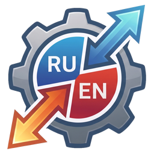
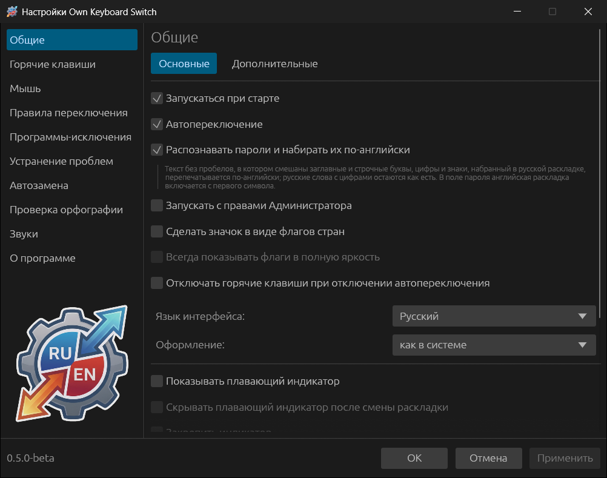
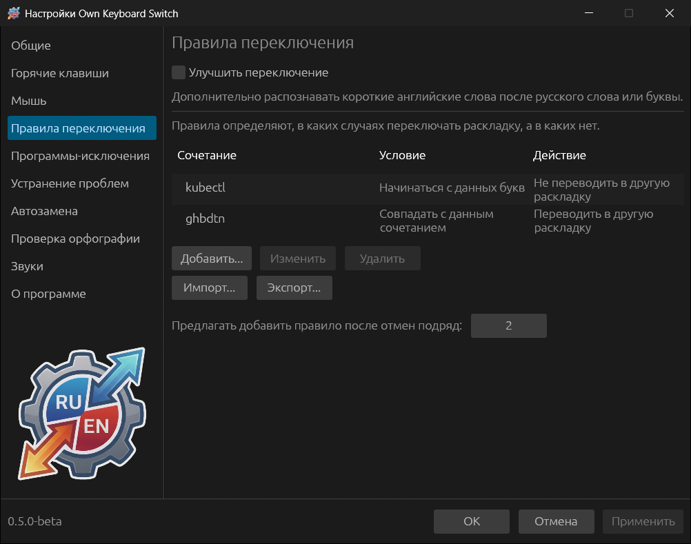
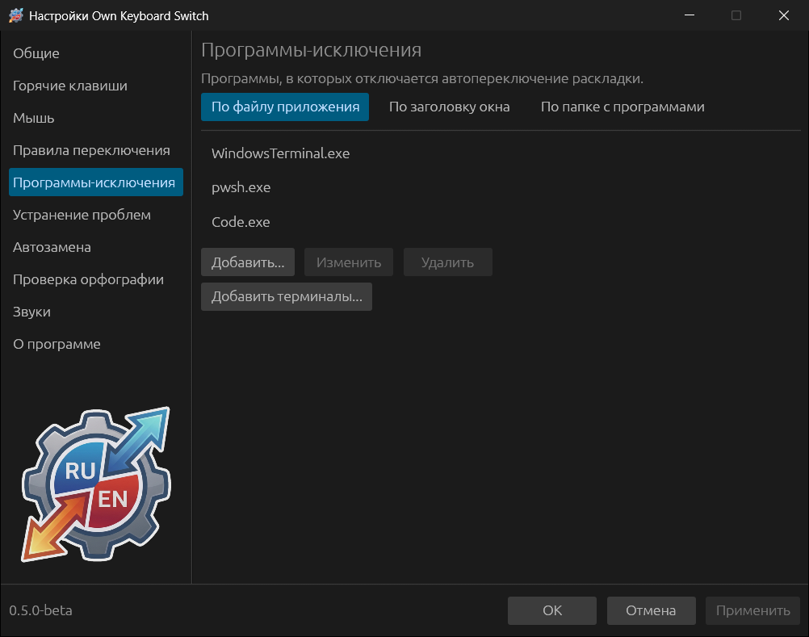
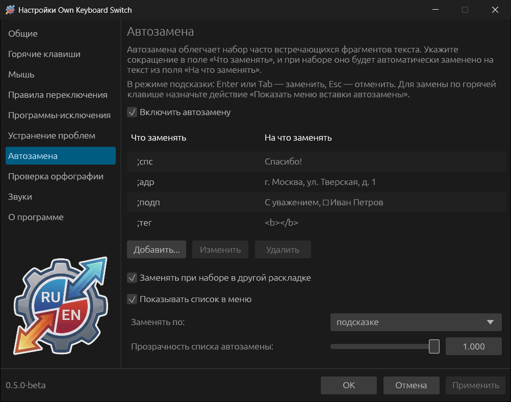
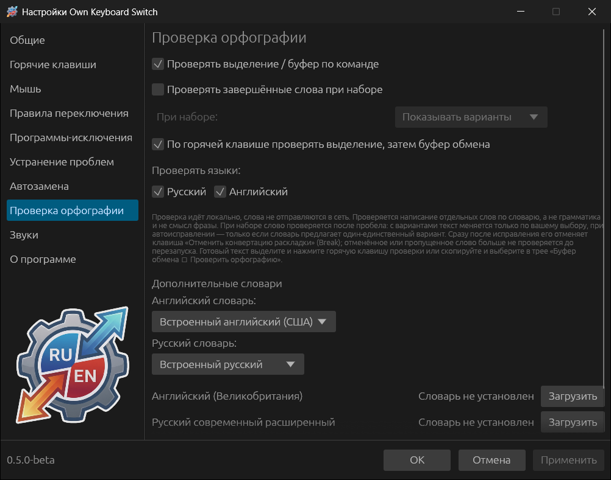
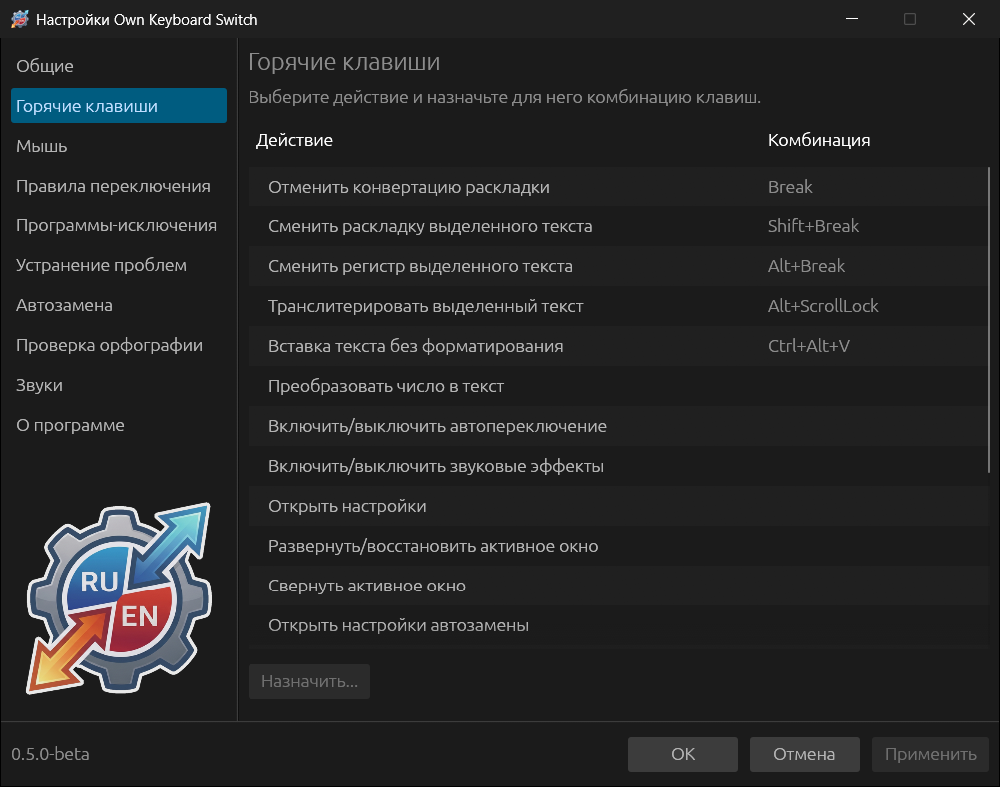

Автопереключение
Решение по встроенным словарям, частотам слов, статистике сочетаний букв и дополнительным правилам. Однобуквенные слова тоже исправляются: z → я.

Own Keyboard SwitchWindows и Linux · 0.6.0-beta
Own Keyboard Switch исправляет слова, набранные не в той раскладке. Когда слово закончено, программа решает, на каком языке оно написано, стирает его, переключает раскладку и набирает заново.
Пример: вы набираете ghbdtn в английской раскладке, программа заменяет это на «привет» и включает русскую раскладку.

Как работает автопереключение
Пробел, Enter, Tab или знак, который не является буквой ни в русской, ни в английской раскладке.
Есть ли каждое в словаре и насколько это частое слово, насколько обычны сочетания букв для каждого языка, что говорят встроенные правила.
Если одно прочтение — настоящее слово, а другое — бессмыслица, слово стирается и печатается в другой раскладке. Раскладка переключается.
Enter сразу выполняет команду, поэтому программа задерживает его, пока проверяет последнее слово, и передаёт терминалу уже после исправления. Команды Windows и Linux и слова языков программирования она знает, даже если их нет в обычном словаре.
Слово намеренно остаётся как есть, если:
Что программа умеет
Решение по встроенным словарям, частотам слов, статистике сочетаний букв и дополнительным правилам. Однобуквенные слова тоже исправляются: z → я.
Break отменяет последнее исправление или переводит слово, которое программа не тронула. После нескольких отмен подряд программа предложит правило для этого слова.
Пароль, набранный в русской раскладке, перепечатывается по-английски: ИшпМщмф2024! → BigVova2024!. В поле пароля английская раскладка включается с первого символа.
Исправляет две заглавные в начале слова, текст со случайно включённым Caps Lock и аббревиатуры в неправильной раскладке: ШЫЩ → ISO.
Смена раскладки, регистра и транслитерация выделенного текста и буфера обмена, вставка без форматирования, число прописью.
Сокращения разворачиваются в готовый текст, в том числе многострочный, с запоминаемым местом курсора. Сокращение узнаётся и в другой раскладке.
По команде или прямо при наборе: варианты у курсора или автоисправление однозначных ошибок. Проверка идёт на компьютере, по словарям Hunspell.
История последних 30 скопированных текстов, плавающий индикатор раскладки, флаги в трее, звуки и переключение раскладки одной клавишей.
Окно настроек
Автозапуск, автопереключение, распознавание паролей, значок в виде флагов, плавающий индикатор. Интерфейс на русском и английском, светлая, тёмная и системная тема.
Свои правила для слов: «Переводить в другую раскладку» или «Не переводить». Правила выгружаются в файл и загружаются обратно. Опция «Улучшить переключение» распознаёт больше коротких английских слов после русского.

В выбранных программах слова не проверяются вовсе. Терминалы и среды разработки программа предлагает добавить при первом запуске.

Замена по подсказке, пробелу, Enter, Tab или горячей клавише. Записи можно вставлять и без сокращений — из плавающего списка или меню у курсора.

Русский и английский, свои слова, дополнительные словари. Скачивание словаря кнопкой «Загрузить» — единственное, для чего программе нужна сеть.

Любое действие можно переназначить, а кнопкам мыши — задать сочетания клавиш. Нет клавиши Break на ноутбуке — назначьте другую.

Главное на одной странице
Сочетания меняются в разделе «Горячие клавиши».
Чего программа не делает
Словари и языковые модели встроены. Сеть нужна только чтобы скачать дополнительный словарь орфографии, когда вы сами нажмёте «Загрузить». Обновления не проверяются, рекламы нет.
В журнале есть только служебные сведения: сколько букв было в слове, какое принято решение и почему. Журнал выключен, пока вы сами его не включите.
Программа работает с парой «русский — английский». Другие раскладки можно оставить в системе: по умолчанию ввод в них программа не трогает.
Скачать · 0.6.0-beta
Предварительный релиз. Версия для Linux ещё молодая: сообщения об ошибках приветствуются.
Sway, Hyprland и другие композиторы Wayland пока не поддерживаются.
sudo apt install ./okbswitch_0.6.0-beta_amd64.debchmod +x okbswitch-0.6.0-beta-x86_64.AppImage
./okbswitch-0.6.0-beta-x86_64.AppImageПри первом запуске программа просит разрешение (pkexec), чтобы дать сеансу доступ к клавиатурам. Сама программа всегда работает от обычного пользователя.
Все релизы и суммы SHA-256 Список изменений Подробно об установке
Решение проблем и вопросы
Чаще всего перед словом нажимали Backspace, раскладку переключили вручную прямо перед словом, программа находится в исключениях или оба прочтения похожи на слова («рук» — her). Нажмите Break, чтобы перевести слово сейчас, и добавьте правило «Переводить в другую раскладку», если слово должно исправляться всегда.
Нажмите Break — исправление отменится. После двух отмен подряд программа предложит правило «Не переводить». Для терминов одной программы добавьте её в исключения; для коротких слов увеличьте «Не переключать слова короче, букв» или сдвиньте чувствительность анализа к «осторожно».
Windows не даёт обычной программе читать клавиатуру в окнах, запущенных от имени администратора: диспетчер задач, установщики, консоль администратора. Включите «Общие → Запускать с правами Администратора».
На многих ноутбуках Break (Pause) нет или она нажимается через Fn. Назначьте действию «Отменить конвертацию раскладки» другое сочетание в разделе «Горячие клавиши».
Переключатель раскладки по своей природе следит за клавиатурой и посылает нажатия, поэтому эвристики антивирусов иногда на него реагируют. Скачивайте программу только со страницы Releases и сверяйте суммы SHA-256, опубликованные рядом с файлами.
Откройте окно настройки — оно появляется при запуске, если что-то не готово — и пройдите отмеченные пункты: доступ к клавиатуре, интеграция рабочего стола, раскладки, активный сеанс. Команда okbswitch --diagnose покажет сеанс, раскладки и доступ к устройствам.